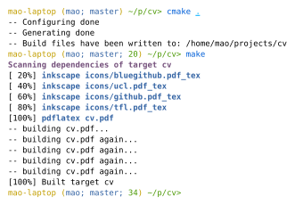
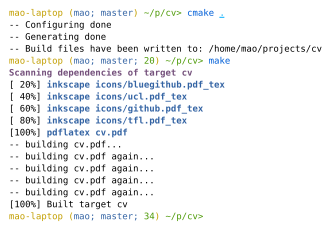

Note: this article is really a "learn CMake the hard way". If you just want a very quick tutorial on writing CMake scripts to build your simple C project, there are many. Here is a 2-line version:
project(awesome_project)
add_executable(awesome_binary source1.c source2.c header1.h header2.h main.c)
If you have been compiling open-source programs for some time, you almost certainly have used CMake. It's a very popular Makefile generator for C/C++ projects. The workflow for compiling a CMake project typically goes like this:
cmake .
make
Recently I have been trying to use CMake for non-C projects, and I find it worked well — CMake build scripts might not be so easy to write at first, but they are very flexible and can certainly be helpful if you want a custom build system for your project, or even just want a Makefile generator for your C/C++ project. In this article, I will try to explain how CMake scripts work, and present some sample CMake scripts I've made.
All CMake projects have one or more CMakeLists.txt files. They contain the build script that CMake uses to generate the Makefile for us. Usually, at the root directory of a CMake project, there will be a main CMakeLists.txt that either contains the build instructions directly, or tells CMake to enter some subdirectory and build its CMakeLists.txt.
Let's first look at the simplest possible CMakeLists.txt: (download project folder)
add_executable(helloworld hello.c)
If you run cmake . with this CMakeLists.txt and a hello.c in ., two things happen:
CMake complains that there is no project() command.
In this case, the one-line CMakeLists.txt is the root CMakeLists.txt, and CMake expects it to be a self-contained, buildable project. However, CMake will still allow you to build it even without the project() command.
Because it is best practice to include a project() command in CMakeLists.txt that is meant to be built on its own, all further CMakeLists.txt files here will contain the project() command.
CMake generates the build script (usually a Makefile) to build hello.c into hello.o, and finally helloworld.
To understand what's really happening, we need to introduce the concept of build rules and targets. In CMake, the build steps of a project consist of individual build rules (usually one for each compilation unit) and targets (usually one for each "final product").
Build rules describe how to generate one or more output file(s) from source file(s). A very simple build rule for hello.o might be something like gcc -c hello.c -o hello.o. For those who like Makefiles, this rule can be written as:
hello.o: hello.c
gcc -c hello.c -o hello.o
Internally, add_executable(helloworld hello.c) creates at least two build rules: hello.o and helloworld (and others such as hello.s, just in case you want to look at the assembly). It also creates a target called helloworld and marks that as one of the default targets to be built.
In some sense, a target marks a stage of a build routine. In the above project, the helloworld target represents everything that we care about — the final binary. The helloworld target would depend on the helloworld build rule, so building the target effectively builds the binary. In more complex projects, where you build a library and an executable that uses the library, you might have a target that builds the library and a target that builds the binary, and the latter target would depend on the first target. There might also be a test target that depends on the library target and contains custom commands to run your tests.
Every add_executable command creates a target for the executable and marks that target as one of the default targets. This means that if you simply run make, that target would be built. You can see a list of targets CMake generated by doing make help.
Now that we know how CMake targets work, we can write our own! Let's ignore CMake's built-in add_executable for now and write our own compiling script for the helloworld project. We simply need to implement two build rules and one (final) target. In CMake, we can make custom build rules with add_custom_command and make custom targets with add_custom_target. To put it very simply:
add_custom_command(OUTPUT x COMMAND y DEPENDS z) creates the rule
x: z
y
add_custom_target(x DEPENDS y) creates a target which builds y.
add_custom_target(x ALL DEPENDS y) creates a target which builds y, and this target is one of the default targets that get built when you simply run make.
There is a catch though: for our CMakeLists.txt to behave exactly like before, we need to create a target that has the same name as the build rule helloworld, so that running either make or make helloworld will build our binary. add_executable does this for us, but because of a limitation in CMake, we can't have something like this:
add_custom_command(OUTPUT helloworld ...)
add_custom_target(helloworld ALL DEPENDS helloworld)
This will create two helloworld rules in one of the generated Makefile files (those in CMakeFiles), and there will be something like helloworld: helloworld, which creates a cyclic dependency. Instead, we create a target that has a different name:
add_custom_command(OUTPUT helloworld ...)
add_custom_target(bin ALL DEPENDS helloworld)
By doing this, running make or make bin will produce the helloworld binary, but running make helloworld won't work as helloworld is not a target and hence CMake did not include it in the top-level Makefile.
Here is the CMakeLists.txt for the same helloworld project above: (download project folder)
project(helloworld)
add_custom_command(
OUTPUT hello.o
DEPENDS hello.c
COMMAND gcc -c hello.c -o hello.o
)
add_custom_command(
OUTPUT helloworld
DEPENDS hello.o
COMMAND gcc hello.o -o helloworld
)
add_custom_target(bin ALL DEPENDS helloworld)
Here is its output:
$ cmake . $ make Scanning dependencies of target bin [ 50%] Generating hello.o [100%] Generating helloworld [100%] Built target bin $ ./helloworld Hello world!
CMake is actually a scripting language, much like Bash. This means that you can make functions that abstract some of the build steps away, use loops to iterate over files, etc. So if you want to use CMake to build, let's say, Java, Haskell or LaTeX, you can create functions that work similar to add_executable, except they compile Java, Haskell, or TeX files.
The good thing about using CMake (rather than writing your own Makefile) is that, not only do you get easy scripting, CMake also tracks build artifacts for you and generates the clean target in Makefile. Besides, CMake also generates a progress output, which just makes your make run look more satisfying.
If you are now convinced and feel ready to write your own CMake scripts, here are some CMake tips that might be helpful:
CMake arrays are just strings with a ; delimiter, and don't bother trying to make CMake work with files with ; in their names: it won't work. This also means that you can't have 2D arrays.
CMake functions don't return values. They take in a variable name as their argument and set that variable with set(${NAME} VALUE PARENT_SCOPE) instead. Variables are scoped by function, so the PARENT_SCOPE keyword is needed.
Use cmake_parse_arguments to parse complex argument formats in your own function.
Let's face it, CMake is not the best scripting language. It works, but it…
; in them.But it does have the advantage of being available nearly everywhere - you can expect people to have CMake installed on their Linux machine, and just tell them to cmake . && make.
Maybe someone could make yet another build system that is both easy to use and flexible? (I'm also waiting for a replacement for for typesetting documents).
« home